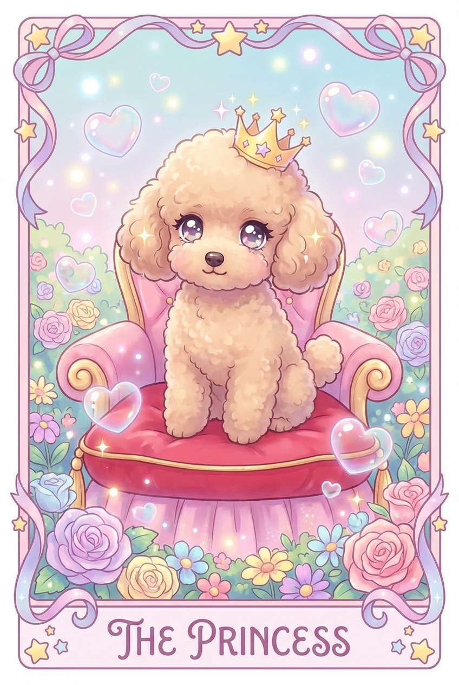

별자리별 이번 주 운세 포인트 (4월 13일–19일)
핵심: 12별자리별 한 줄 가이드 + 공통 키워드 7가지로 다음 주 흐름을 미리 정리합니다.

12별자리 한 줄 운세
양자리 - 먼저 치고 나가기보다 협의 포인트를 정하면 다음 주 속도가 더 안정됩니다.
황소자리 - 쌓아둔 루틴이 힘을 냅니다. 작은 정리부터 시작하면 체감이 빠릅니다.
쌍둥이자리 - 말이 많아지는 주간입니다. 전달보다 확인 질문이 관계를 부드럽게 만듭니다.
게자리 - 가까운 사람과의 역할 조정이 중요합니다. 부탁은 구체적으로 나누세요.
사자자리 - 주목받는 자리에서 실속을 챙길 수 있습니다. 보여주기보다 결과를 남기세요.
처녀자리 - 미뤄둔 점검을 끝내기 좋습니다. 일정표와 체크리스트가 운을 끌어올립니다.
천칭자리 - 균형을 맞추려다 결정을 늦출 수 있습니다. 기준 하나를 먼저 고르세요.
전갈자리 - 집중력이 깊어집니다. 말로 설득하기보다 조용히 증거를 쌓는 편이 좋습니다.
사수자리 - 새로운 제안이 들어와도 즉시 확장하지 말고 일정 여유부터 확인하세요.
염소자리 - 책임이 늘 수 있지만 성과도 분명합니다. 우선순위를 숫자로 정리하세요.
물병자리 - 낯선 관점이 돌파구가 됩니다. 다만 실행은 작게 나눠 시작하세요.
물고기자리 - 감정의 파도가 잔잔해질수록 선택이 선명해집니다. 휴식 시간을 먼저 확보하세요.
공통 키워드 7
1. 조율 - 혼자 밀어붙이기보다 역할과 기대치를 먼저 맞추기.
2. 확인 - 메시지, 일정, 숫자는 보내기 전 한 번 더 보기.
3. 축소 - 큰 목표를 이번 주에 끝낼 수 있는 단위로 줄이기.
4. 실속 - 보여주는 성과보다 실제로 남는 결과를 선택하기.
5. 경계 - 부탁과 책임의 범위를 말로 분명히 정하기.
6. 정리 - 쌓인 자료, 약속, 미결정을 한 번 털어내기.
7. 회복 - 일정 사이에 숨 돌릴 시간을 의도적으로 남기기.
이번 주 한 줄 행동
4월 13일에는 미뤄둔 약속이나 역할 1가지를 먼저 정리하고, 이번 주에 끝낼 수 있는 작은 단위로 다시 나누기.
피하면 좋은 것
즉답, 애매한 약속, 역할이 불분명한 부탁. 다음 주는 “작게 나누고 먼저 맞추기”가 핵심입니다.
키워드는 방향을 알려주는 나침반일 뿐이에요. 다음 주 리듬을 맞추는 데만 살짝 써보세요.